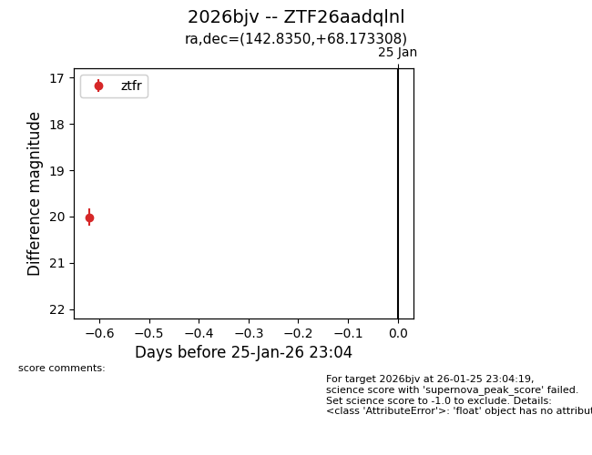
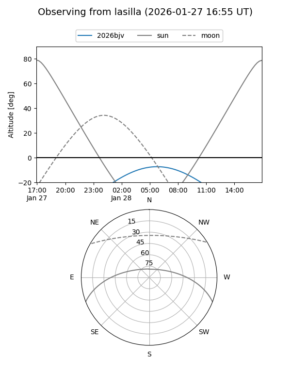
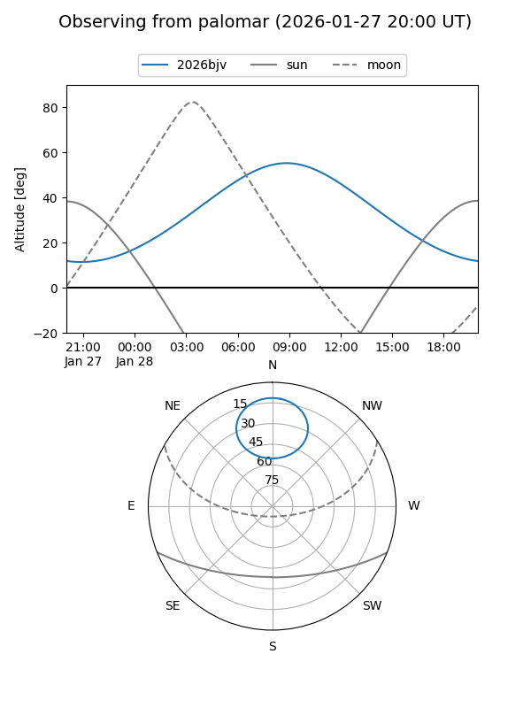

2026bjv
Target 2026bjv at 2026-01-25 23:06
Aliases and brokers:
FINK: link
Lasair: link
ALeRCE: link
TNS: link
YSE: link
alt names
ZTF26aadqlnl (ztf,fink_ztf)
2026bjv (tns,yse)
Coordinates:
equatorial (ra, dec) = 142.8350,+68.17331
equatorial (HMS+DMS) = 09:31:20.41,+68:10:23.91
galactic (l, b) = (144.5962,+39.48561)
Flags:
Photometry:
last ztfr=20.02
1 ztfr detections
Lightcurve

Visibility


Additional plots